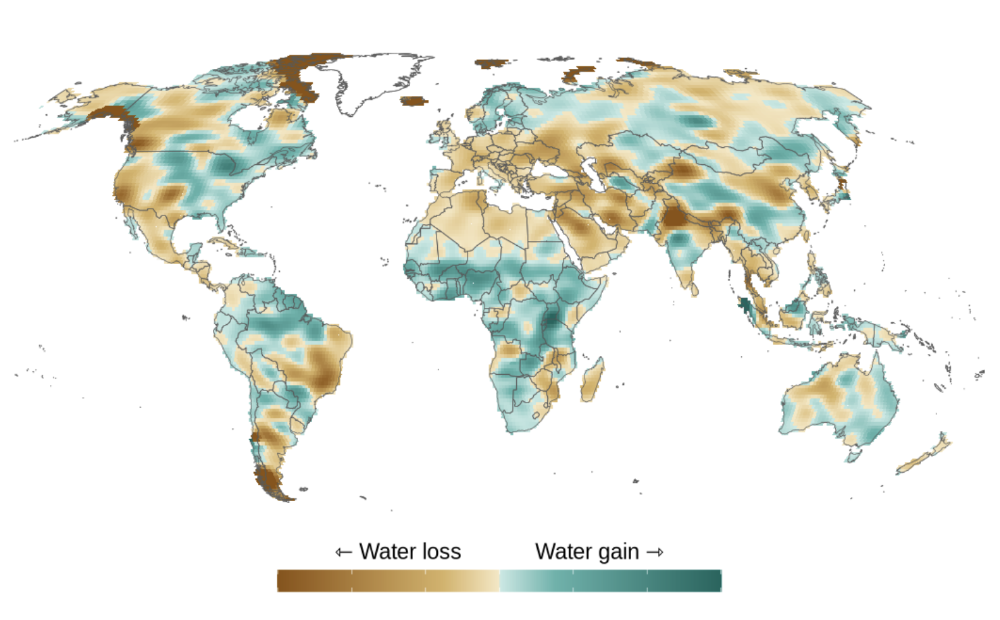

I am a PhD student in the Agricultural and Resource Economics department at UC Berkeley. I am interested in using large geospatial datasets to answer questions at the intersection of climate change, socioeconomic development, and water resource management. My main research interests relate to equitable climate change adaptation and the feedback loops between climate, land-use and the hydrological cycle.
I came to Berkeley after working at the Environmental Markets Lab (emLab) at UC Santa Barbara as a Predoc and completing a Masters in Environmental Economics and Climate Change at LSE. I also hold bachelor's degrees from Erasmus University Rotterdam.
Fields of interest: Climate change · Water resources · Agriculture
Contact me at: mludwig at berkeley.edu
In the Media

emLab at UC Santa Barbara
Blog: The Global Water Crisis: Freshwater Imbalances and Their Risks to Society